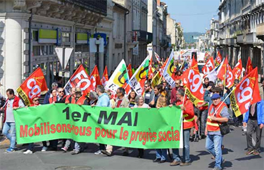

Actualité
Vers un 1er mai au balcon
Pas de défilés dans la rue, cette année, mais d’autres formes de prises de paroles. PHOTO PHILIPPE GREILLER
Social - Privés de rue, confinement oblige, les syndicats cherchent de nouveaux modes d'action pour célébrer la Fête du travail, demain
C'est d'ordinaire le jour où syndicats et associations comptent leurs troupes. Où se mesurent les rapports de force dans le combat social. Mais demain, confinement oblige, les rues seront désertes pour le 1er mai. Un paradoxe alors que les inquiétudes du monde du travail sont plus fortes que jamais.
" C'est la première fois de toute ma vie que je ne vais pas aller défiler. Le 1er mai, c'est plus qu'un symbole. J'y ai emmené tous mes enfants. Même quand j'étais à l'étranger, j'allais manifester", relève Migel Alonso, militant du syndicat Sud. "Depuis 1947, on avait un meeting fraternel. C'est la première fois qu'il n'aura pas lieu", glisse Philippe Mano, secrétaire général de FO Gironde.
Comment les syndicats vont-ils fêter le travail demain ? "On va envoyer des messages par mail à nos adhérents, des éditoriaux avec la première affiche du 1er mai daté de 1890 qu'on a retrouvée", explique Philippe Mano.
"On va essayer d'être dans l'échange, en organisant des forums de discussions sur Internet. Le travail syndical continue, tant sur les questions de protection sanitaire que sociales. Il ne se fait pas que dans la rue", glisse Jean-Yves Gazard-Maurel, secrétaire général de l'UD CFDT Gironde.